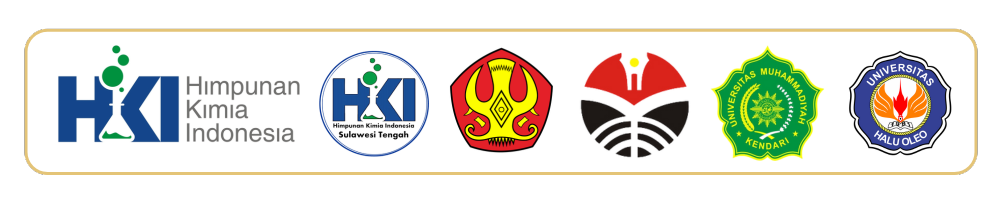
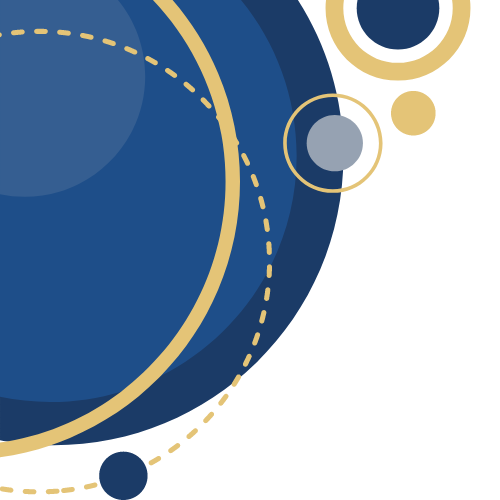
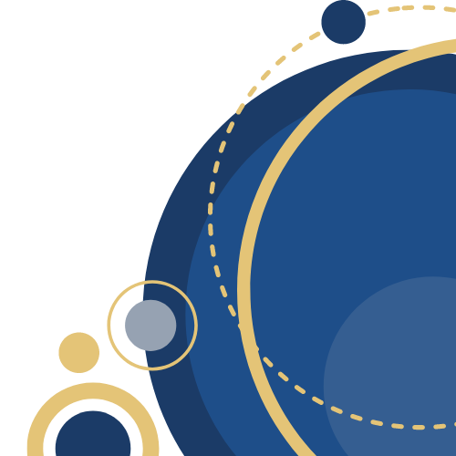

SERTIFIKAT
PENGHARGAAN
Nomor : 26/PP.HKI/X/2024
Diberikan kepada
Abdul Rohim
sebagai
Event Organizer
Pada Webinar Nasional HKI: Pengembangan Aktivitas Guru Kimia Penggerak yang diselenggarakan oleh Himpunan Kimia Indonesia selama 3 hari
pada tanggal 1, 3, dan 5 Oktober 2024 dengan kinerja yang Sangat Baik
Palu, 05 Oktober 2024
| Ketua HKI Pusat | Kepala Bidang Pengembangan dan Pembinaan SDM HKI |
|---|---|
| Prof. Dr. Ir. Muhammad Nurdin, M.Sc., IPU., ASEAN Eng. | Prof. Drs. Anang Wahid M Diah, M.Si., Ph.D |
 |
 |
| NIP. 196606061994031006 | NIP. 196909101996031003 |
SERTIFIKAT
PENGHARGAAN
Nomor : 26/PP.HKI/X/2024
| No | Job Desk | Nilai |
|---|---|---|
| 1 | Menampilkan Video dan Profil Pengisi Acara (Master of Ceremony, Opening Speech, Speaker, dan Moderator) pada kegiatan sesuai rundown | 100 |
| 2 | Menangani hal teknis di zoom selama meeting berlansung | 90 |
| Total | 95 | |
| Ketua HKI Pusat | Kepala Bidang Pengembangan dan Pembinaan SDM HKI |
|---|---|
| Prof. Dr. Ir. Muhammad Nurdin, M.Sc., IPU., ASEAN Eng. | Prof. Drs. Anang Wahid M Diah, M.Si., Ph.D |
|
|
| NIP. 196606061994031006 | NIP. 196909101996031003 |